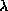

Data Structures and Algorithms
with Object-Oriented Design Patterns in Java
Data Structures and Algorithms
with Object-Oriented Design Patterns in Java


- o
- seebig oh, seelittle oh
-

- seeEuler's constant
-
- seeomega
-
- seetheta
- 
- seelambda
- abstract algorithms
- Tree Traversals
- abstract class
- Class Hierarchy, Class Hierarchy, Abstract Classes and Concrete
- abstract data type
- Foundational Data Structures, Abstract Data Types
- abstract method
- Class Hierarchy
- abstract solver
- Abstract Backtracking Solvers
- abstract sorter
- Sorting and Sorters
- access path
- Inserting Items into an
- accessor
- Accessor Methods, Accessors and Mutators
- activation record
- The Basic Axioms
- activity-node graph
- Application: Critical Path Analysis
- actual parameter
- Passing Primitive Types
- acyclic
- directed graph
- Directed Acyclic Graphs
- adapter
- PreorderInorder, and Postorder , PreorderInorder, and Postorder
- address
- Abstract Data Types
- adjacency lists
- Adjacency Lists
- adjacency matrix
- Adjacency Matrices
- adjacent
- Terminology
- ADT
- seeabstract data type
- algorithmic abstraction
- Algorithmic Abstraction
- ancestor
- More Terminology
- proper
- More Terminology
- and
- UnionIntersection, and Difference
- annealing
- Simulated Annealing
- annealing schedule
- Simulated Annealing
- anonymous class
- getEnumeration Method
- arc
- directed
- Terminology
- undirected
- Undirected Graphs
- arithmetic series
- About Arithmetic Series Summation
- arithmetic series summation
- An Example-Geometric Series Summation, About Arithmetic Series Summation
- arity
- N-ary Trees
- array
- Foundational Data Structures
- ASCII
- Character String Keys
- association
- Searchable Containers
- asymptotic behavior
- Asymptotic Notation
- attributes
- Abstract Data Types
- AVL balance condition
- AVL Search Trees
- AVL rotation
- Balancing AVL Trees
- AVL tree
- Basics
- B-Tree
- B-Trees, B-Trees
- Bachmann, P.
- An Asymptotic Upper Bound-Big
- backtracking algorithms
- Backtracking Algorithms
- bag
- Projects, Multisets
- balance condition
- AVL Search Trees, B-Trees
- AVL
- AVL Search Trees
- base class
- Class Hierarchy, Derivation and Inheritance
- big oh
- An Asymptotic Upper Bound-Big
- tightness
- Tight Big Oh Bounds, More Notation-Theta and Little
- tightness
- Tight Big Oh Bounds, More Notation-Theta and Little
- transitive property
- Properties of Big Oh
- binary digit
- Binomial Queues
- binary heap
- Sorting with a Heap
- binary operator
- Applications
- binary search
- Locating Items in an , Example-Binary Search
- binary search tree
- Binary Search Trees, Binary Search Trees
- binary tree
- Binary Trees, Binary Trees
- complete
- Complete Trees
- binding
- Abstract Data Types, Variables
- binomial
- Binomial Trees
- binomial coefficient
- Binomial Trees
- bit
- Binomial Queues
- Boolean
- and
- UnionIntersection, and Difference
- or
- UnionIntersection, and Difference
- bound
- Abstract Data Types
- branch-and-bound
- Branch-and-Bound Solvers
- breadth-first spanning tree
- Constructing Spanning Trees
- breadth-first traversal
- Applications, Applications, Breadth-First Traversal, Example-Balancing Scales, Breadth-First Traversal
- brute-force algorithms
- Brute-Force and Greedy Algorithms
- bubble sort
- Bubble Sort
- bucket sort
- Example-Bucket Sort
- buckets
- Example-Bucket Sort
byte- The Basic Axioms
- bytecode
- HashingHash Tables, and
- C++ programming language
- Abstract Data Types
- carry
- Merging Binomial Queues
- cast operator
- Run-Time Type Information and
- ceiling function
- About Harmonic Numbers
- central limit theorem
- Exercises
- chained scatter table
- Chained Scatter Table
- child
- Applications, Terminology
- circular list
- Singly-Linked Lists, Doubly-Linked and Circular Lists
- class
- References Types, Objects and Classes
- anonymous
- getEnumeration Method
- inner
- getEnumeration Method
- class instance
- Objects and Classes
- clock frequency
- A Simplified Model of
- clock period
- A Simplified Model of
- coalesce
- Chained Scatter Table
- cocktail shaker sort
- Exercises
- coefficient
- binomial
- Binomial Trees
- collapsing find
- Collapsing Find
- column-major order
- Exercises
- commensurate
- elements
- Sorted Lists, Basics
- elements
- Sorted Lists, Basics
- functions
- More Big Oh Fallacies , More Big Oh Fallacies
- functions
- More Big Oh Fallacies , More Big Oh Fallacies
- compact
- The Fragmentation Problem
- compaction
- Mark-and-Compact Garbage Collection
- complement
- Exercises
- complete N-ary tree
- Complete N-ary Trees
- complete binary tree
- Complete Trees, Sorting with a Heap
- complex numbers
- Class Members: Fields and
- component
- connected
- Connectedness of an Undirected
- compound statement
- Rules For Big Oh
- concrete class
- Class Hierarchy, Abstract Classes and Concrete
- conjunction
- SetsMultisets, and Partitions
- connected
- undirected graph
- Connectedness of an Undirected
- connected component
- Connectedness of an Undirected , Exercises
- conquer
- seedivide
- constant
- Conventions for Writing Big
- constructor
- Constructors
- default no-arg
- The No-Arg Constructor
- no-arg
- The No-Arg Constructor
ContainerEmptyException- getFirst and getLast Methods
- counted do loop
- Rules For Big Oh
- critical activity
- Application: Critical Path Analysis
- critical path
- Application: Critical Path Analysis
- critical path analysis
- Application: Critical Path Analysis
- cubic
- Conventions for Writing Big
- cycle
- More Terminology
- negative cost
- Single-Source Shortest Path
- simple
- More Terminology
- dangling pointer
- What is Garbage?
- dangling reference
- What is Garbage?
- data ordering property
- M-Way Search Trees
- database
- Associations
- decision tree
- A Lower Bound on
- declaration
- Class Hierarchy
- default no-arg constructor
- The No-Arg Constructor
- defragment
- The Fragmentation Problem
- degree
- Applications
- in
- Terminology
- out
- Terminology
- dense graph
- Sparse vs. Dense Graphs
- depth
- More Terminology
- depth-first spanning tree
- Constructing Spanning Trees
- depth-first traversal
- Example-Balancing Scales, Depth-First Traversal
- deque
- StacksQueues, and Deques, Deques
- derivation
- Class Hierarchy, Derivation and Inheritance
- derivative
- Applications
- derived class
- Derivation and Inheritance
- descendant
- More Terminology
- proper
- More Terminology
- difference
- SetsMultisets, and Partitions, Basics, UnionIntersection, and Difference
- symmetric
- Exercises
- differentiation
- Applications
- digit
- binary
- Binomial Queues
- digraph
- seedirected graph
- Dijkstra's algorithm
- Dijkstra's Algorithm
- directed acyclic graph
- Directed Acyclic Graphs
- directed arc
- Terminology
- directed graph
- Directed Graphs
- discrete event simulation
- Discrete Event Simulation
- disjunction
- SetsMultisets, and Partitions
- distribution sorting
- Distribution Sorting
- distribution sorts
- Sorter Class Hierarchy
- divide and conquer
- Top-Down Algorithms: Divide-and-Conquer
- division method of hashing
- Division Method
- double hashing
- Double Hashing
- double rotation
- Double Rotations
- double-ended queue
- Deques
double- The Basic Axioms
- doubly-linked list
- Doubly-Linked and Circular Lists
- dual
- Application: Critical Path Analysis
- dynamic binding
- Abstract Data Types
- dynamic programming
- Bottom-Up Algorithms: Dynamic
Programming
- earliest event time
- Application: Critical Path Analysis
- edge
- Applications, Terminology
- emanate
- Terminology
- incident
- Terminology
- element
- SetsMultisets, and Partitions
- emanate
- Terminology
- enumeration
- Containers
- equivalence classes
- Applications
- equivalence of trees
- Comparing Trees
- equivalence relation
- Applications, Kruskal's Algorithm
- Error
- Exceptions
- Euler's constant
- About Harmonic Numbers, Solving The Recurrence-Telescoping, Average Running Time
- Euler, Leonhard
- Binomial Trees
- Eulerian walk
- Exercises
- evaluation stack
- Postfix Notation
- event-node graph
- Application: Critical Path Analysis
- exception
- getFirst and getLast Methods, extract Method
- exception handler
- Exceptions
- exceptions
- Exceptions
- exchange sorting
- Exchange Sorting
- exchange sorts
- Sorter Class Hierarchy
- exclusive or
- Character String Keys, Character String Keys
- exponent
- Floating-Point Keys
- exponential
- Conventions for Writing Big
- exponential cooling
- Simulated Annealing
- exponential distribution
- Exponentially Distributed Random Variables
- expression tree
- Expression Trees
- extend
- Abstract Methods and Abstract
- external node
- N-ary Trees
- external path length
- Unsuccessful Search
- factorial
- Analyzing Recursive Methods
- feasible solution
- Brute-Force Algorithm
- Fibonacci hashing method
- Fibonacci Hashing
- Fibonacci number
- Fibonacci Hashing, AVL Search Trees
- Fibonacci numbers
- Example-Fibonacci Numbers, Example-Computing Fibonacci Numbers
- closed-form expression
- Example-Fibonacci Numbers
- generalized
- Example-Generalized Fibonacci Numbers
- field
- Variables, Class Members: Fields and
- FIFO
- Queues
- fifo-in, first-out
- Queues
- find
- collapsing
- Collapsing Find
- floor function
- About Harmonic Numbers
- Floyd's algorithm
- Floyd's Algorithm
- forest
- Binomial Queues, Binomial Queues, Implementing a Partition using
- formal parameter
- Passing Primitive Types
- Fortran
- Abstract Data Types
- foundational data structure
- Foundational Data Structures
- fully connected graph
- Exercises
- garbage
- What is Garbage?
- garbage collection
- What is Garbage?
- mark-and-compact
- Mark-and-Compact Garbage Collection
- mark-and-sweep
- Mark-and-Sweep Garbage Collection
- reference counting
- Reference Counting Garbage Collection
- stop-and-copy
- Stop-and-Copy Garbage Collection
- Gauss, Karl Friedrich
- Binomial Trees
- generalization
- Projects
- generalized Fibonacci numbers
- Example-Generalized Fibonacci Numbers
- geometric series
- About Geometric Series Summation
- geometric series summation
- An Example-Geometric Series Summation, Example-Geometric Series Summation Again, About Geometric Series Summation, Example-Geometric Series Summation Yet
- golden ratio
- Fibonacci Hashing
- graph
- connectedness
- Connectedness of an Undirected
- dense
- Sparse vs. Dense Graphs
- directed
- Directed Graphs
- directed acyclic
- Directed Acyclic Graphs
- labeled
- Labeled Graphs
- sparse
- Sparse vs. Dense Graphs
- traversal
- Graph Traversals
- undirected
- Undirected Graphs
- graph theory
- Graphs and Graph Algorithms
- handle
- Handles
- harmonic number
- Average Running Times, About Harmonic Numbers, Average Case Analysis, Solving The Recurrence-Telescoping, Average Running Time
- harmonic series
- About Harmonic Numbers
- hash function
- Keys and Hash Functions, Keys and Hash Functions
- hash table
- Hash Tables
- hashing
- division method
- Division Method
- Fibonacci method
- Fibonacci Hashing
- middle-square method
- Middle Square Method
- multiplication method
- Multiplication Method
- head
- Singly-Linked Lists
- heap
- Basics, Garbage Collection and the
- heapify
- Sorting with a Heap
- heapsort
- Sorting with a Heap
- height
- of a node in a tree
- More Terminology
- of a tree
- More Terminology
- heuristic
- Depth-FirstBranch-and-Bound Solver
- hierarchy
- Trees
- Horner's rule
- Another Example-Horner's Rule, Example-Geometric Series Summation Again, Character String Keys
IllegalArgumentException- extract Method
- implement
- Abstract Methods and Abstract
- implementation
- Class Hierarchy
- implements
- Class Hierarchy
- in-degree
- Terminology, Topological Sort
- in-place sorting
- Insertion Sorting, Selection Sorting
- incident
- Terminology
- increment
- Generating Random Numbers
- infix
- Applications
- infix notation
- Infix Notation
- inheritance
- Derivation and Inheritance
- single
- Derivation and Inheritance
- inner class
- getEnumeration Method, Positions of Items in , Inner Classes
- inorder traversal
- Inorder Traversal, Traversing a Search Tree
- M-way tree
- Traversing a Search Tree
- insertion sorting
- Insertion Sorting
- straight
- Straight Insertion Sort
- insertion sorts
- Sorter Class Hierarchy
- instance
- Objects and Classes
- integral type
- Integral Keys
- interface
- Class Hierarchy, Class Hierarchy, Interfaces
- internal node
- N-ary Trees
- internal path length
- Unsuccessful Search
- complete binary tree
- Complete Trees
- internal path length of a tree
- Successful Search
- Internet domain name
- Character String Keys
- intersection
- SetsMultisets, and Partitions, Basics, UnionIntersection, and Difference
- interval
- search
- Locating Items in an
- inverse modulo W
- Multiplication Method
- inversion
- Average Running Time
- isomorphic
- Alternate Representations for Trees
- isomorphic trees
- Exercises
- iterative algorithm
- Example-Fibonacci Numbers
- iterator
- Projects
- Java programming language
- Abstract Data Types
- Java virtual machine
- Variables
- key
- Associations, Keys and Hash Functions
- keyed data
- Using Associations
- knapsack problem
- Example-0/1 Knapsack Problem
- Kruskal's algorithm
- Kruskal's Algorithm
- L'Hôpital's rule
- About Logarithms, About Logarithms
- l-value
- Abstract Data Types
- labeled graph
- Labeled Graphs
- lambda
- seeload factor
- last-in, first-out
- Stacks
- latest event time
- Application: Critical Path Analysis
- leaf
- Terminology
- leaf node
- N-ary Trees
- least-significant-digit-first radix sorting
- Radix Sort
- left subtree
- Binary Trees, M-Way Search Trees
- leftist tree
- Leftist Trees
- level
- More Terminology
- level-order
- Complete N-ary Trees
- level-order traversal
- Applications
- lexicographic order
- Array Subscript Calculations
- lexicographic ordering
- Radix Sort
- lexicographically precede
- Radix Sort
- lifetime
- Abstract Data Types, Abstract Data Types, Variables
- LIFO
- Stacks
- limit
- Properties of Big Oh
- linear
- Conventions for Writing Big
- linear congruential random number generator
- Generating Random Numbers
- linear probing
- Linear Probing
- linear search
- Yet Another Example-Finding the
- linked list
- Foundational Data Structures
- list
- Ordered Lists and Sorted
- little oh
- More Notation-Theta and Little
- live
- Mark-and-Sweep Garbage Collection
- LL rotation
- Single Rotations
- in a B-tree
- Removing Items from a
- load factor
- Average Case Analysis
- local variable
- Variables
- log squared
- Conventions for Writing Big
- logarithm
- Conventions for Writing Big
long- The Basic Axioms
- loop
- More Terminology
- loose asymptotic bound
- More Notation-Theta and Little
- LR rotation
- Double Rotations
- ukasiewicz, Jan
- Applications
- M-way search tree
- M-Way Search Trees
- mantissa
- Floating-Point Keys
- many-to-one mapping
- Keys and Hash Functions
- mark-and-compact garbage collection
- Mark-and-Compact Garbage Collection
- mark-and-sweep garbage collection
- Mark-and-Sweep Garbage Collection
- matrix
- Matrices
- addition
- Matrices
- adjacency
- Adjacency Matrices
- multiplication
- Matrices
- sparse
- Adjacency Matrices
- max-heap
- Sorting with a Heap
- median
- Selecting the Pivot
- median-of-three pivot selection
- Selecting the Pivot
- memory leak
- What is Garbage?
- merge sort
- Example-Merge Sorting
- merge sorting
- Merge Sorting
- merge sorts
- Sorter Class Hierarchy
- mergeable priority queue
- Basics
- merging nodes in a B-tree
- Removing Items from a
- Mersenne primes
- The Minimal Standard Random
- method
- Class Members: Fields and
- middle-square hashing method
- Middle Square Method
- min heap
- Basics
- minimal subgraph
- Minimum-Cost Spanning Trees
- minimum spanning tree
- Minimum-Cost Spanning Trees
- mixed linear congruential random number generator
- Generating Random Numbers
- modulus
- Generating Random Numbers
- Monte Carlo methods
- Monte Carlo Methods
- multi-dimensional array
- Multi-Dimensional Arrays
- multiplication hashing method
- Multiplication Method
- multiplicative linear congruential random number generator
- Generating Random Numbers
- multiset
- Multisets
- mutator
- Mutators
- N-ary tree
- N-ary tree
- N-ary Trees
- N-queens problem
- N-queens problem
- Exercises
- name
- Abstract Data Types, Abstract Data Types, Abstract Data Types, Variables
- Nary tree
- textbf
- negative cost cycle
- Single-Source Shortest Path
- Newton, Isaac.
- Binomial Trees
- no-arg constructor
- The No-Arg Constructor
- default
- The No-Arg Constructor
- node
- Applications, Basics, N-ary Trees, Binary Trees, Terminology
- non-recursive algorithm
- Example-Fibonacci Numbers
- normalize
- Generating Random Numbers
- null path length
- Leftist Trees, Leftist Trees
- null reference
- Null References
- object
- Objects and Classes
- object-oriented programming
- Abstract Data Types
- object-oriented programming language
- Abstract Data Types
- objective function
- Brute-Force Algorithm
- odd-even transposition sort
- Exercises
- omega
- An Asymptotic Lower Bound-Omega
- open addressing
- Scatter Table using Open
- operator precedence
- Applications
- optimal binary search tree
- Exercises
- or
- UnionIntersection, and Difference
- ordered list
- Ordered Lists and Sorted
- ordered tree
- N-ary Trees, Binary Trees
- ordinal number
- Positions of Items in
- oriented tree
- N-ary Trees
- out-degree
- Terminology
- overload
- Array Indexing Methods-get and
- override
- Derivation and Inheritance, Derivation and Inheritance
- package
- Member Access Control
- parameter passing
- Parameter Passing
- parent
- Applications, Terminology
- parentheses
- Applications
- partial order
- Comparing Sets
- partition
- Partitions, Kruskal's Algorithm
- Pascal
- Abstract Data Types
- Pascal's triangle
- Example-Computing Binomial Coefficients
- Pascal, Blaise
- Example-Computing Binomial Coefficients
- pass-by-value
- Parameter Passing
- path
- Terminology
- access
- Inserting Items into an
- path length
- external
- Unsuccessful Search
- internal
- Unsuccessful Search
- weighted
- Shortest-Path Algorithms
- perfect binary tree
- Searching a Binary Tree, AVL Search Trees
- period
- Generating Random Numbers
- pivot
- Quicksort
- pointer
- References Types
- Polish notation
- Applications
- polymorphism
- Class Hierarchy, Polymorphism
- polynomial
- About Polynomials, About Polynomials Again
- postcondition
- Inserting Items in a
- postorder traversal
- Postorder Traversal
- power set
- Array and Bit-Vector Sets
- precede lexicographically
- Radix Sort
- precondition
- Inserting Items in a
- predecessor
- Fields, More Terminology
- prefix notation
- Prefix Notation
- preorder traversal
- Preorder Traversal
- prepend
- prepend Method
- Prim's algorithm
- Prim's Algorithm
- primary clustering
- Linear Probing
- prime
- relatively
- Multiplication Method
- primitive type
- Wrappers for the Primitive
- priority queue
- mergeable
- Basics
- probability density function
- Exponentially Distributed Random Variables
- probe sequence
- Scatter Table using Open
- proper subset
- Comparing Sets
- proper superset
- Comparing Sets
- pruning a solution space
- Branch-and-Bound Solvers
- pseudorandom
- Generating Random Numbers
- quadratic
- Conventions for Writing Big
- quadratic probing
- Quadratic Probing
- queue
- StacksQueues, and Deques
- quicksort
- Quicksort
- r-value
- Abstract Data Types
- radix sorting
- Radix Sort
- random number generator
- linear congruential
- Generating Random Numbers
- mixed linear congruential
- Generating Random Numbers
- multiplicative linear congruential
- Generating Random Numbers
- random numbers
- Generating Random Numbers
- random variable
- Random Variables
- rank
- Union by Height or
- record
- Abstract Data Types
- recurrence relation
- Analyzing Recursive Methods
- recursive algorithm
- Analyzing Recursive Methods, Example-Fibonacci Numbers
- reference
- null
- Null References
- reference count
- Reference Counting Garbage Collection
- reference counting garbage collection
- Reference Counting Garbage Collection
- reference type
- References Types
- reflexive
- Applications
- relation
- equivalence
- Applications
- relatively prime
- Multiplication Method
- repeated substitution
- Solving Recurrence Relations-Repeated Substitution
- Reverse-Polish notation
- Applications
- right subtree
- Binary Trees
- RL rotation
- Double Rotations
- root
- Basics, Mark-and-Sweep Garbage Collection
- rotation
- AVL
- Balancing AVL Trees
- double
- Double Rotations
- LL
- Single Rotations, Removing Items from a
- LL
- Single Rotations, Removing Items from a
- LR
- Double Rotations
- RL
- Double Rotations
- RR
- Single Rotations, Removing Items from a
- RR
- Single Rotations, Removing Items from a
- single
- Double Rotations
- row-major order
- Array Subscript Calculations
- RPN
- seeReverse-Polish notation
- RR rotation
- Single Rotations
- in a B-tree
- Removing Items from a
- RTTI
- seerun-time type information
- run-time type information
- Run-Time Type Information and
- RuntimeException
- Exceptions
- scales
- Example-Balancing Scales
- scatter tables
- Scatter Tables
- scope
- Abstract Data Types, Abstract Data Types, Variables
- search interval
- Locating Items in an
- search tree
- M-way
- M-Way Search Trees
- binary
- Binary Search Trees
- seed
- Generating Random Numbers
- selection sorting
- Selection Sorting
- selection sorts
- Sorter Class Hierarchy
- sentinel
- Singly-Linked Lists, Adjacency Matrices
- separate chaining
- Separate Chaining
- set
- SetsMultisets, and Partitions
- sibling
- Terminology
- sign
- Floating-Point Keys
- significant
- Floating-Point Keys
- simple cycle
- More Terminology
- simulated annealing
- Simulated Annealing
- simulation time
- Discrete Event Simulation
- single inheritance
- Derivation and Inheritance
- single rotation
- Double Rotations
- single-ended queue
- Queues
- singleton
- Exercises, Implementation
- singly-linked list
- Doubly-Linked and Circular Lists
- size
- Abstract Data Types
- slack time
- Application: Critical Path Analysis
- slide
- Handles
- solution space
- Example-Balancing Scales
- solver
- Abstract Backtracking Solvers
- sort
- topological
- Topological Sort
- sorted list
- Ordered Lists and Sorted , Sorted Lists, Basics
- sorter
- Sorting and Sorters
- sorting
- in place
- Selection Sorting
- in-place
- Insertion Sorting
- sorting algorithm
- bucket sort
- Example-Bucket Sort
- sorting by distribution
- Distribution Sorting
- sorting by exchanging
- Exchange Sorting
- sorting by insertion
- Insertion Sorting
- sorting by merging
- Merge Sorting
- sorting by selection
- Selection Sorting
- source
- Exercises
- spanning tree
- Minimum-Cost Spanning Trees
- breadth-first
- Constructing Spanning Trees
- depth-first
- Constructing Spanning Trees
- minimum
- Minimum-Cost Spanning Trees
- sparse graph
- Sparse vs. Dense Graphs
- sparse matrix
- Adjacency Matrices
- specialization
- Projects
- stable sorts
- Basics
- stack
- Stacks
- stack frame
- The Basic Axioms
- state
- Discrete Event Simulation
- static binding
- Abstract Data Types
- static inner class
- Implementation
- Stirling numbers
- Partitions, Partitions
- stop-and-copy garbage collection
- Stop-and-Copy Garbage Collection
- straight insertion sorting
- Straight Insertion Sort
- straight selection sorting
- Straight Selection Sorting
- string literal
- Wrappers for the Primitive
- strongly connected
- Connectedness of a Directed
- subgraph
- Minimum-Cost Spanning Trees
- minimal
- Minimum-Cost Spanning Trees
- subset
- Comparing Sets
- proper
- Comparing Sets
- subtraction
- SetsMultisets, and Partitions
- subtree
- Applications
- successor
- Fields, More Terminology
- superset
- Comparing Sets
- proper
- Comparing Sets
- symbol table
- HashingHash Tables, and , Applications
- symmetric
- Applications
- symmetric difference
- Exercises
- tail
- Singly-Linked Lists, Singly-Linked Lists
- telescoping
- Solving The Recurrence-Telescoping, Running Time of Divide-and-Conquer
- temperature
- Simulated Annealing
- tertiary tree
- N-ary Trees
- theta
- More Notation-Theta and Little
- this
- Non-Static Inner Classes
- throw
- Exceptions
- tight asymptotic bound
- Tight Big Oh Bounds
- time
- simulation
- Discrete Event Simulation
- topological sort
- Topological Sort
- total order
- Basics
- binary trees
- Comparing Trees
- transitive
- Sorted Lists, Applications, Basics
- transpose
- Matrices
- traversal
- Tree Traversals, Example-Balancing Scales, Graph Traversals
- breadth-first
- Breadth-First Traversal, Breadth-First Traversal
- breadth-first
- Breadth-First Traversal, Breadth-First Traversal
- depth-first
- Depth-First Traversal
- inorder
- Inorder Traversal, Traversing a Search Tree
- inorder
- Inorder Traversal, Traversing a Search Tree
- postorder
- Postorder Traversal
- preorder
- Preorder Traversal
- tree
- Basics
- N-ary
- N-ary Trees
- binary
- Binary Trees
- equivalence
- Comparing Trees
- expression
- Expression Trees
- height
- More Terminology
- internal path length
- Successful Search
- leftist
- Leftist Trees
- ordered
- N-ary Trees, Binary Trees
- ordered
- N-ary Trees, Binary Trees
- oriented
- N-ary Trees
- search
- seesearch tree
- tertiary
- N-ary Trees
- traversal
- Tree Traversals
- tree traversal
- Applications
- type
- Abstract Data Types, Variables, Variables
- ugly syntax
- Array Indexing Methods-get and
- undirected arc
- Undirected Graphs
- undirected graph
- Undirected Graphs
- Unicode
- Character String Keys
- Unicode character set
- Example
- Unicode escape
- Example
- uniform distribution
- Spreading Keys Evenly
- uniform hashing model
- Average Case Analysis
- union
- SetsMultisets, and Partitions, Basics, UnionIntersection, and Difference
- union by rank
- Union by Height or
- union by size
- Union by Size
- universal set
- SetsMultisets, and Partitions, Kruskal's Algorithm
- unsorted list
- Basics
- user-defined type
- References Types
- value
- Abstract Data Types, Associations, Variables
- variable
- Variables
- local
- Variables
- Venn diagram
- Alternate Representations for Trees, SetsMultisets, and Partitions
- vertex
- Terminology
- visibility
- Abstract Data Types
- visitor
- Containers
- weakly connected
- Connectedness of a Directed
- weighted path length
- Shortest-Path Algorithms
- word size
- Middle Square Method
- wrap
- Wrappers for the Primitive
 Copyright © 1998 by Bruno R. Preiss, P.Eng. All rights reserved.
Copyright © 1998 by Bruno R. Preiss, P.Eng. All rights reserved.